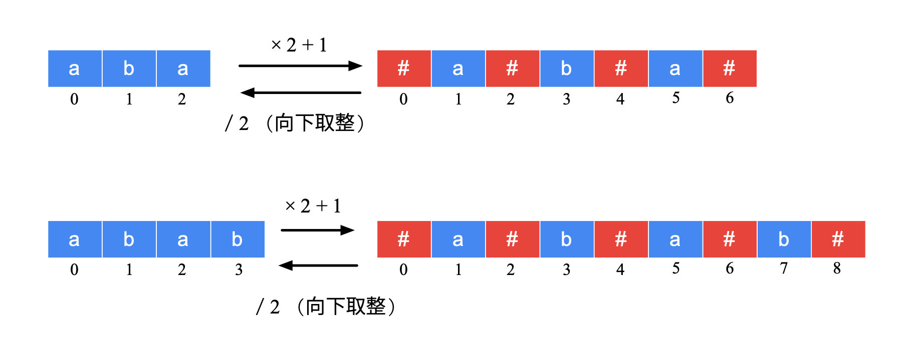
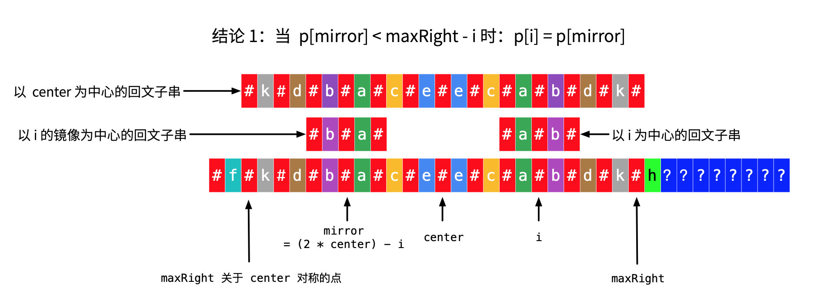
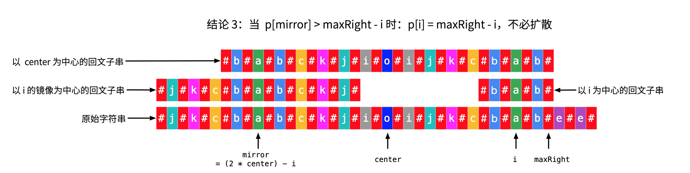

Given a string s, find the longest palindromic substring in s. You may assume that the maximum length of s is 1000.
Example 1:
Input: “babad”
Output: “bab”
Note: “aba” is also a valid answer.
Example 2:
Input: “cbbd”
Output: “bb”
来源：力扣（LeetCode）
链接：https://leetcode-cn.com/problems/longest-palindromic-substring
著作权归领扣网络所有。商业转载请联系官方授权，非商业转载请注明出处。
框架
1 | class Solution { |
1. 朴素
遍历每个子串O(n^2)，判断子串是否回文O(n)，共O(n^3)
提交错误，超时。
1 | class Solution { |
2. 最长公共子串
回文字符串正反都是一样的，所以对于回文字符串，其在s和逆序的s'中是一样的，因此可以转换为求最长公共子串的问题。
注意最长公共子串和最长公共子序列是不同的，参考https://blog.csdn.net/ggdhs/article/details/90713154
最长公共子串不一定是s的回文字符串，比如abc123cba得到的最长公共子串是abc但并不回文，因此还需要判断索引位置
最长公共子串：
其要求必须连续，所以dp时需要确定结尾元素相同，要不然接不上。
设dp[i][j]为数组A中前i个元素和数组B中前j个元素以A[i-1]和B[j-1]为结尾的最长公共子串的长度。
则递推公式为：
dp[i][j] = 0, 当i = 0 || j = 0时（初始条件）dp[i][j] = 0, 当A[i-1] != B[j-1]时（结尾不同，不能往后接了）dp[i][j] = dp[i-1][j-1] + 1, 当A[i-1] == B[j-1]时（可以继续往后接，顺便带上前面部分的长度）
所以初始化dp[m][n]全为0，仅当满足条件3时更新值即可。此时的时间复杂度和空间复杂度均为O(mn)。
值得注意的是，由于每次更新dp[i][j]只需要dp[i-1][j-1]，所以可以优化空间复杂度为O(n)，不过此时需要记录最大值maxLength，否则会被后面的值覆盖掉。同时也需要逆序更新。
1 | class Solution { |
3. dp优化的朴素算法
遍历每个字符串是O(n^2)，判断每个子串是否回文是O(n)，因此朴素方法的复杂度是O(n^3).
朴素方法复杂的原因是做了重复的判断。如果能够将判断每个子串的复杂度降低到O(1)，那么整体的复杂度就优化到了O(n^2)。
如果要避免重复判断，可以使用dp记录每个子串的是否回文情况，判断新的子串时只需要借助中间的旧子串的回文性就可以了。
设bool dp[i][j]，代表s[i, ..., j]是回文的，则dp[i][j] = dp[i+1][j-1] && s[i] == s[j]，初始化dp[i][i] = true。
此外，长度为1或2的子串需要额外判断。并且需要逆序。
1 | class Solution { |
4. 中心扩展算法
回文实际上就是中心对称，所以可以找到中心点，然后向两边扩展即可。
中心点可以是字符，比如aba；也可以是空，比如aa，因此一共有n + (n - 1) = 2n - 1个中心点，O(n)。
每次向外扩展是O(n)的，因此总的复杂度是O(n^2)。由于不需要额外的空间，所以空间复杂度是O(1)，还优于前面的算法……
1 | class Solution { |
5. Manacher’s Algorithm
马拉车算法，复杂度O(n)，太强了。
算法思想类似于中心扩展算法，但是充分利用了回文串的对称性，把扩展的复杂度降到了O(1)。
同时，它在字符串s的每个字符的间隔和开头与结尾都添加了#作为分隔符（#是不出现在字符串s中的符号），解决了中心扩展算法的奇偶判断问题。
如，aba变成了#a#b#a#，abba变成了#a#b#b#a#，全都变成了奇数位的判断。

此外，算法定义了数组p[i]，用来记录以s'[i]（s'[]为s添加间隔符之后的新字符串）为中心的回文串的回文半径（包括回文中心和一侧的所有字符的长度和）
可以分析得出，p[i] - 1即为旧字符串s中以s[i]为中心的回文串的总长度。
所以问题就变成了求回文半径p[i]的问题。
如果还是采用中心扩展计算回文半径，那么复杂度和中心扩展算法是一样的，所以需要一种新的方法。
中心扩展的问题就是某些字符串会经过多次重复的扩展和计算，所以如果能够根据过去的p得到新的p，那么复杂度就降低了。
定义maxRight和center，分别用来记录新字符串s'中，已经探索过的回文串能够到达的最右侧的位置maxRight，以及到达该位置的回文串的中心索引center.
根据i与上述变量的关系，可以分析p[i]的更新方式。
- 当
i >= maxRight时
说明是最开始或者可能是刚刚更新完某一个特别短的串时，此时没有参考，所以p[i]只能自己中心扩展。 - 当
i < maxRight时
此时需要根据与i关于center对称的索引i_mirror的p[i_mirror]来分析。
由于i与i_mirror关于center对称，因此有(i + i_mirror) / 2 = center，所以i_mirror = 2 * center - i。
根据p[i_mirror]的值，讨论以下情况：p[i_mirror] - 1 < maxRight - imaxRight - i是i到maxRight的距离，也是maxRight关于center的对称点到i_mirror的距离。p[i_mirror]是s'[i_mirror]的回文半径，p[i_mirror] - 1就是单纯的除去中心点之后某一侧的长度，若其小于maxRight - i，说明以s'[i_mirror]为中心的回文串是没有到达当前s'[center]定义的回文串的左侧边界的，是s'[center]的回文串的子串。
由于s'[i_mirror]定义的回文串是s'[center]的子串，又回文串是对称的，所以s'[i]的回文串与s'[i_mirror]的回文串是相同的。
因此p[i]直接等于p[i_mirror]。
p[i_mirror] - 1 == maxRight - i
说明以s'[i_mirror]为中心的回文串的左边界恰巧与s'[maxRight_mirror]重合。s'[i_mirror]的回文串没有继续拓展，可能是因为左侧已到达字符串的边界，或者是左侧的字符与右侧对应的字符不相等。s'[i]的回文串中间一部分肯定与s'[i_mirror]的回文串是相同的，但是s'[i]的回文串可能继续向外拓展。
所以首先设置p[i] = p[i_mirror]，然后让s'[i]在此基础上继续中心扩展。p[i_mirror] - 1 > maxRight - i
说明s'[i_mirror]的回文串的左边界超过了s'[center]的回文串的左边界。
首先是s'[i_mirror]的回文串的左边界到达了s'[maxRight_mirror]，因此设置p[i] = maxRight - i + 1。
其次，s'[i_mirror]的回文串的左边界超过了s'[maxRight_mirror]，说明其可以继续扩展。
但是s'[center]的回文串没有继续扩展，说明s'[maxRight]之后的字符与s'[maxRight_mirror]之前的字符肯定不相等。
而s'[i_mirror]的回文串额外扩展出去的部分字符由于回文串的对称性，s'[i]也是有的。
但是s'[center]都没继续向右扩展，说明s'[i]肯定也不能继续向右扩展了。
因此p[i] = maxRight - i + 1。

1 | class Solution { |